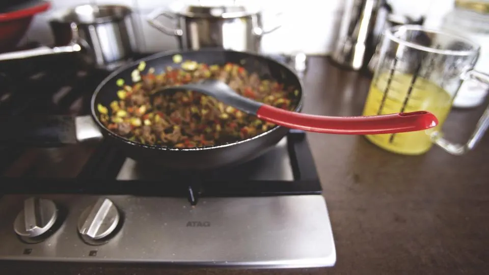
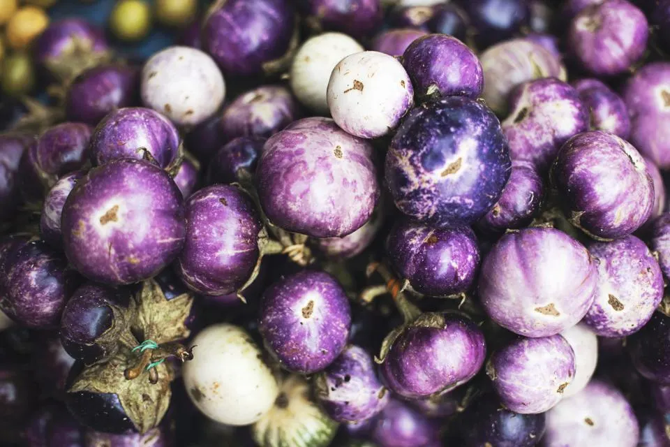
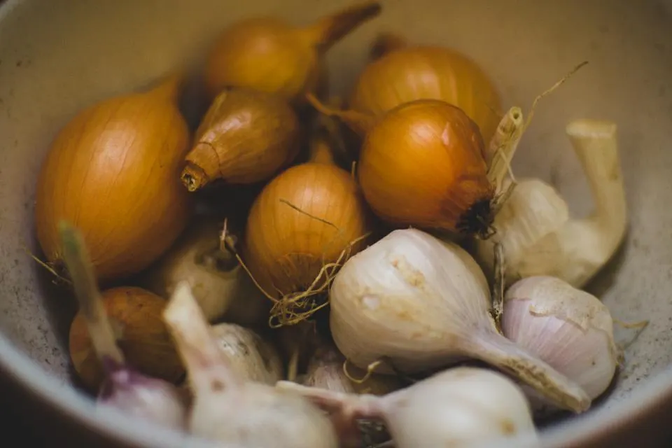

01Filipino food
Luiza's Filipino Kitchen is listed as a Filipino restaurant. Ask the restaurant, or check its Facebook page, for what is on the menu.
- Filipino restaurant
Filipino restaurant · Prescott Valley, Arizona
Asking about Filipino food, the menu, a visit, a question first?
Luiza's Filipino Kitchen is a Filipino restaurant in Prescott Valley, Arizona. You will find it at 8108 E Frontage Rd, and you can call the restaurant or send a message on its Facebook page.


Illustrative photos
Luiza's Filipino Kitchen is a Filipino restaurant on E Frontage Rd in Prescott Valley, Arizona. Call or message it on Facebook to ask what is on the menu.
What we do

01Luiza's Filipino Kitchen is listed as a Filipino restaurant. Ask the restaurant, or check its Facebook page, for what is on the menu.
8108 E Frontage Rd in Prescott Valley, Arizona. Call or send a message on Facebook first if you have questions.
Luiza's Filipino Kitchen.
A Filipino restaurant on E Frontage Rd in Prescott Valley, Arizona.
Illustrative photo
How to start
The menu, a visit or anything else. Pick it in the message helper below.
Call the restaurant, or copy the text from the helper and send it on the Luiza's Filipino Kitchen Facebook page.
Luiza's Filipino Kitchen is at 8108 E Frontage Rd in Prescott Valley. Check the details with the restaurant before you go.
Contact
You can reach Luiza's Filipino Kitchen by phone or through its Facebook page. Use the helper to write your message, then paste it there.
8108 E Frontage Rd, Prescott Valley, AZ 86314
Pick what you need. Nothing is sent from this page: you copy the text and paste it on Facebook.